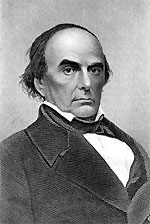

|

|

|
|
|
Daniel Webster graduated from Dartmouth University in 1801
and was admitted to the bar in 1805. A Federalist, he
opposed the War of 1812, which helped elect him to the U.S.
Congress from Portsmouth, New Hampshire. Webster served in
the House from 1813 to 1817, where he refused to vote for
taxes to support the war, and he opposed conscription, the
terms of the charter reestablishing the Bank of the U.S.,
and the protective Tariff of 1816.
Webster moved to Boston in 1816 and established himself
as one of the nation's leading constitutional lawyers. In
1819, he represented Dartmouth College, his alma mater, in
Dartmouth College v. Woodward, when the New Hampshire
legislature tried to transform the college into a public
institution in violation of its charter. In McCulloch v.
Maryland, also in 1819, he defended the constitutionality of
the U.S. Bank, and argued that a state could not tax a
federal instrumentality. Five years later, in Gibbons v.
Ogden he opposed the monopoly of interstate navigation that
had been granted to Ogden by the state of New York.
Webster was again elected to Congress from Massachusetts
in 1822, serving until 1827, and serving as chairman of the
judiciary committee. He voted against the protective Tariff
of 1824, and he voted for John Quincy Adams when the
presidential election of 1824 was thrown into the House of
Representatives. By the time he was elected to the U.S.
Senate in 1827, manufacturing had supplanted shipping in the
economy of New England. He supported the Tariff of 1828
because it protected the growing textile industry. In January
1830, when Senator Robert Y. Hayne of South Carolina, a
spokesman for Vice President John C. Calhoun, suggested that
the South and the West enter into an alliance whereby the
West would support a low tariff in return for southern votes
to make land in the West readily available at low prices,
Webster accused Hayne of attempting to exacerbate sectional
tensions. Following Hayne's rebuttal, Webster delivered his
famous second reply to Hayne, arguing that the Constitution
was the expression of the American people, not an agreement
between the states, and that Hayne's states' rights theories
could lead only to civil war.
When, after the South Carolina legislature had nullified
the Tariff of 1832, Henry Clay sought to allay sectional
tensions by proposing a compromise tariff which reduced
rates. Webster denounced the compromise, which was
nonetheless adopted.
In 1836, Webster was one of three Whig candidates for
president, but he was defeated, receiving only fourteen
electoral votes. The election was won by the Democratic
candidate Martin Van Buren. During the Van Buren
administration Webster took a partisan Whig position on most
measures, opposing, for example, the president's subtreasury
proposal. During 1841-43 he was secretary of state under
William Henry Harrison and John Tyler. When Tyler vetoed a
bill creating a new national bank, the entire cabinet, with
the exception of Webster, resigned. Webster remained only
long enough to negotiate the Webster-Ashburton Treaty of
1842, which settled the northeastern boundary dispute with
British Canada.
From 1845 to 1850 Webster once again served in the
Senate. He opposed the acquisition of Texas (1845) and
condemned the Mexican War, but, like most Whigs, he voted
for war supplies. He favored banning slavery from the
territory acquired from Mexico after the war, but despite
his opposition to some of the provisions of the Compromise
of 1850, he supported it in his famous "Seventh of March"
speech "not as a Massachusetts man, nor as a northern man,
but as an American." From July 1850 until his death he
served as President Fillmore's secretary of state.
Daniel Webster was known in his own day as the great
defender of the Constitution, and his preeminence as a
constitutional lawyer was hardly challenged during the more
than thirty years that spanned the period between the
Dartmouth College case and his death. The single-minded
nationalism he sustained in the Senate and in every act and
thought of his public life, against the challenge of Calhoun
and the state sovereignty school, was translated into legal
terms and had become by Webster's death an enduring gloss
upon the Constitution. No man except John Marshall himself
did more to provide the legal framework within which the
economic development of modern America took place.
Webster's conservatism was solidly based on almost
reverent respect for property. He believed, along with the
New England Federalists who were his mentors, that
government should not only protect property but should
encourage its accumulation. His courtroom skills brought him
clients from the business community, and from each case he
learned more of the workings of the system. By the 1820s he
had become the leading spokesman for business, both in the
courts and in the Congress. During the War of 1812 he took a
states' rights position because like Jefferson before him he
recognized in the states the only effective check upon the
federal government. His merchant constituents lost heavily
by the interruption of commerce, and he saw no better way to
end the war and reopen the seas to shipping. When New
England reinvested her idle capital in manufacturing,
Webster changed sides. Only the national government could
impose and enforce the protective tariffs on which the
prosperity of this newborn industry rested, and so, with the
Tariff of 1828, Webster became a protectionist.
There was more to it, of course, than this. Webster had
come to see through reasoning as Andrew Jackson saw by
instinct that sovereignty was indivisible. If the nation was
to endure, or even to exist under the name, it could have
only one source of power. It was this conviction that
sparked his debate with Hayne, and the later senatorial
battles with Calhoun. The increasingly significant role of
the national government was implicit in his arguments
dealing with such matters as interstate commerce, banking,
and bankruptcy; and in his use of the State Department to
promote not only international amity but international
trade.
The most critical appraisals of Webster have been in
connection with his personal financial activities and in
relation to the dominant issue of his time--slavery. There is
no doubt that Webster shared the American dream of material
success. He admired the rich and strove continuously with
indifferent success to achieve wealth for himself. He
speculated in western lands, bought and sold shares in
business enterprises, and solicited prosperous clients. Many
of his activities seem, to a later generation, to involve
conflict of interest, but he cannot be singled out in this
regard for special censure. His ethical standards were those
of his time, shared by his contemporaries. Even his
acceptance of money donated by his constituents to keep him
in the Senate seemed to him perfectly legitimate. It was no
more than an additional source of income, to compensate in
part for the concomitant loss of legal fees. Those who
raised the money took their chances on getting some return.
It was less a bribe than a retainer. There was never any
doubt that he would serve the interests of his constituents
to the best of his judgment, with or without monetary
inducement.
His attitude toward slavery was always compounded of a
personal dislike for the institution and a deep respect for
the law. He is on record against slavery as early as 1804.
He opposed the Missouri Compromise and later the extension
of slavery to territories acquired as a result of the war
with Mexico. But he opposed equally the activities of the
abolitionists, who became thereby implacable political foes.
In his famous Seventh of March speech, supporting the
Compromise of 1850, he upheld the fugitive slave law in
spite of New England's strong feelings against it. The
Constitution recognized slaves as property, and sectional
peace required that southern property no less than northern
be secured. To his abolitionist constituents he had sold out
to the "slave power," presumably in return for votes; but to
the extent that his efforts passed the Compromise, he
secured a ten-year deferment of the Civil War--enough to
ensure victory for the free states.
Although he never achieved the presidency, Daniel Webster
left a more enduring mark upon American institutions than
any man who did hold that office in his time. Of almost
equal permanence was his hold on the American imagination.
He was a striking figure in his prime--powerfully built, a
little under six feet tall, with barrel chest and massive
shoulders topped by a great leonine head. His complexion was
dark, his over abundant hair coal black, and his large
deep-set eyes, though they could flash with fire on
occasion, added to the impression that earned him the
nickname "Black Dan." When he rose to speak, the largest
audience was instantly hushed, so magnificent was his
presence and so towering his reputation. His rhythmic
sentences flowed like music as they led up to crashing
chords that made the blood boil or tingle at the speaker's
will; and when one shook off the spell and read the words in
cold print, the reasoning remained as tight and clear and
compelling as a lawyer's brief. Such transcendent
performances as the Dartmouth College case, the first Bunker
Hill oration, and the second reply to Hayne made him a
contemporary legend and a folk hero for generations to come.
It was his tragedy to enter upon the public stage at a time
of great emotional and moral crisis, when no man--not even
Daniel Webster--could move impartially between the contending
forces without being crushed. He was above all a supremely
rational man who believed in every fiber of his being that
differences were not resolved by violence but by reason and
good will.
Source: John A. Garraty and Jerome L. Sternstein, eds., Encyclopedia of
American Biography (New York: HarperCollins, 1996), 1150.
|